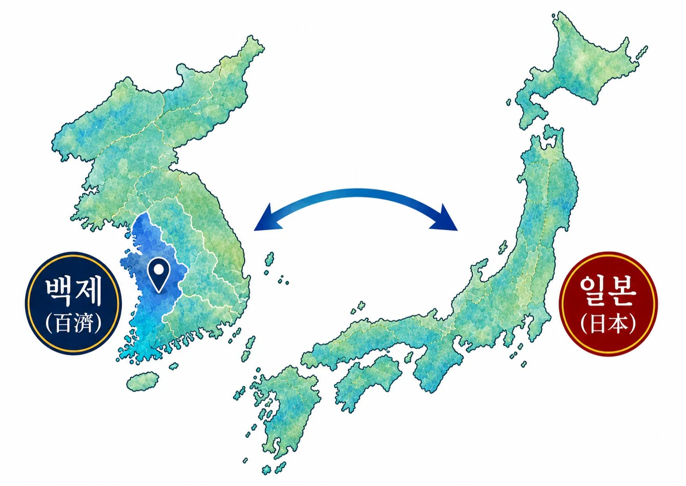

日本と 忠南、忠北、大田
交流の始まり
일본과 충남·충북·대전 교류의 시작
伸一はいつも韓国は日本に「文化大恩の国」であり、
신이치는 언제나 한국은 일본에게 ‘문화 대은의 나라’이고その恩に報いるためにも幸福と平和の大哲理を
그 은혜에 보답하기 위해서라도 행복과 평화의 대철리를伝えなければならないと考えていた。
전해야 한다고 생각하고 있었다.これらの絶対的な恵みの中で最大“大恩”がまさに
이러한 절대적인 은혜 중에서도 가장 큰 대은(大恩)이 바로仏教を伝来してくれたことだ。
불교를 전래해 준 일이다.- 中略 -중략
「百済国より経・論・僧等をわたすのみならず金銅の教主釈尊を渡し奉る」
“백제국으로부터 경(經)·논(論)·승(僧) 등을 건네 주었을 뿐더러 금동(金銅)의 교주석존을 건네 주었다.” 御書997頁 · 어서 997쪽
「百済国と申す国より聖明皇・日本国に仏法をわたす」
“백제국이라고 하는 나라로부터 성명왕(聖明皇)이 일본국에 불법을 전하니” 御書1309頁 · 어서 1309쪽

韓国はまさに文化先進の土地だった。
한국은 그야말로 문화 선진의 땅이었다.まさにこの文化先進の地で釈尊の仏法が日本に伝来され、
바로 이 문화 선진의 땅에서 석존의 불법이 일본에 전래되어今日、仏法西還の時代を迎えたのだ。
오늘날 불법서환(佛法西還)의 시대를 맞이한 것이다. ＜新人間革命第8巻 激流の章＞＜신인간혁명 제8권 격류의 장＞